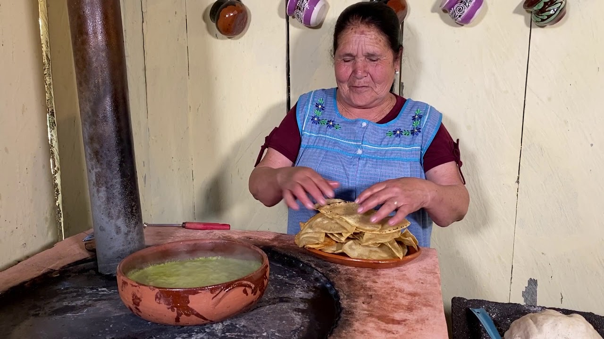

Chilaquiles

Chilaquiles is a traditional Mexican dish, commonly eaten at breakfast
Ingredients
Salsa:
- 5 jitomates
- 1 diente de ajo
- ¼ de cebolla
- 2 chiles serrano sin rabo
- 4 ramitas de cilantro
- 1 cucharada de aceite
- 1 cubo (10.5 gramos) de Knorr Tomatísimo 8 Cubos Concentrado De Tomate
Serving & Garnishes
- 6 tazas de totopos de maíz
- 4 cucharaditas de crema reducida en grasa
- 4 cucharaditas de queso fresco rallado
- 1/2 cebolla blanca en aros
Steps
Salsa
- Hierve los jitomates junto con el ajo, la cebolla y los chiles en suficiente agua durante 15 minutos o hasta que estén suaves
- Licúa lo anterior con media taza del agua donde se cocieron los jitomates, el cilantro y el cubo de Tomatísimo®. Cuela
- Calienta el aceite en una olla y cocina la salsa durante 10 minutos.
Serving
- Agrega los totopos y deja a fuego bajo durante un par de minutos para que se impregnen bien con la salsa.
- Reparte los chilaquiles en cada plato y sirve con crema, queso fresco y aros de cebolla.